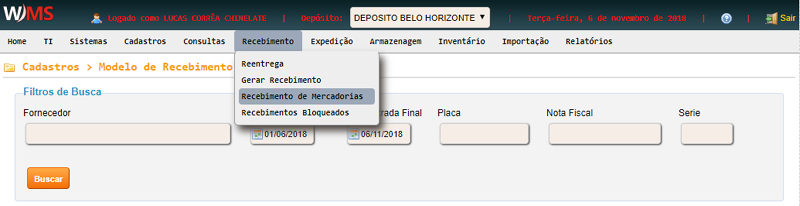

Recebimento -> Recebimento de mercadorias
Clique no menu RECEBIMENTO, em seguida clique em RECEBIMENTO DE MERCADORIAS.

Preencha os campos desejados em FILTROS, em seguida clique em BUSCAR
Ao posicionar o mouse no início da linha do registro desejado, você terá acesso aos seguintes recursos:
- Descarga Recebimento: seleciona os operadores de descarga no recebimento.
- Parâmetros do Recebimento: caso queira parametrizar o recebimento para ser endereçado automaticamente.
- Visualizar Ordem de Serviço: visuzaliza os dados da ordem de serviço.
- Visualizar Andamento: exibe os status de andamento do recebimento.
- Visualizar Notas Fiscais: visuzaliza os dados da(s) nota(s).
- Imprimir Etiquetas dos Produtos: imprime as etiquetas avulsas de cada produto.
- Produtos Sem Dados Logísticos: gera relatório com os produtos sem dados logísticos cadastrados no sistema.
- Endereçamento: realiza o endereçamento dos produtos.
- Forçar Correção: quando ocorre algum erro, ao forçar correção, o sistema tentará corrigí-lo.
- Funcionário Descarga: relatório com informações sobre o funcionário que realizou a descarga.